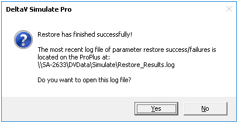

The Simulate algorithm
When a specific node is selected in the SimulatePro interface, changes requested from this interface result in the node parameters SIM_REQUEST, SIM_INIT or SIM_FACTOR being written on the selected node. If the Control Network is selected in the interface, the Simulate application will repeat the write request on all PC nodes. Thus, a single request may impact all nodes, as illustrated below.
Each application node or ProfessionalPLUS node in a multinode Simulate application supports the following node parameters (accessed as Workstation name/CONT/Parameter name) to support requests made through the SimulatePro interface or by an application.
- SIM_INIT – Command (set to 1) to execute the request made by SIM_REQUEST. This parameter is automatically reset to 0 when execution of the request is complete.
- SIM_REQUEST – Identifies the request. Note that the application should set this parameter only if SIM_INIT is zero (the last request has been completed).
SIM_REQUEST codes Code Description 1 Enable SIMULATE_IN connection 2 Disable SIMULATE_IN connection 3 Force first-time initialization 4 Set target mode to Manual (note that the IO fields for the block must be entered) 5 Set target mode to Normal (note that the IO fields for the block must be entered) 6 Set target mode to Auto (note that the IO fields for the block must be entered) 7 Force appropriate blocks' L_TYPE parameter to Direct Independent 8 Enable SIMULATE_IN and force L_TYPE to Direct Independent 9 Save to a file the module and block parameters contained in all modules assigned to the node 10 Restore, from a specified .DAT file, the module and block parameters of all modules assigned to the node 11 Restore from a specified .XML file the module and block parameters of all modules assigned to the node (equivalent to SIM_REQUEST code 15, followed by code 17) 12 Do not restore operating and tuning parameters 13 Restore operating parameters 14 Restore tuning parameters 15 Restore operating and tuning parameters 16 Resume selected 17 Resume all - SIM_FACTOR – Factor to apply for simulation faster or slower than real time. A value of 0 stops execution. Positive values are interpreted as speed-up (2 is twice real time execution), negative values are interpreted as 1/SIM_FACTOR slowdown (–30 is 1/30 of real time execution).
SIM_MODE parameter
Use the SIM_MODE parameter to allow the client of an OPC DA server to read a group of tags at a scanning rate faster than the default 500 milliseconds by specifying a requested update rate of 0. You must include the exact path WorkstationName/SIM_MODE.CV, accessed via OPC.
Invalid use of the SIM_MODE parameter can generate one of the following error codes:
| Error code | Description |
|---|---|
| DV_E_LICENSE_EXCEEDED | The SIM_MODE parameter is not writeable unless the workstation has a DeltaV Simulate Multinode or DeltaV Simulate Standalone license. Otherwise, using the SIM_MODE parameter generates an error message indicating that the OPC Server license limit has been exceeded. |
| OPC_E_DUPLICATE_NAME | The SIM_MODE parameter can be specified for no more than one group of tags per OPC DA server. |
Saving and Restoring the System State
This section explains how the SimulatePro application saves and restores the system state in a multinode system.
The DeltaV soft controller on each node supports saving parameter and block data in files on that node. If the save request is made through the SimulatePro application these files are collected on the ProfessionalPLUS workstation.
When SimulatePro processes the request to save or restore the system state, it stops module execution on all selected nodes. After a save request, SimulatePro copies files saved on each node to the \Simulate folder on the ProfessionalPLUS workstation.
For DeltaV v14.3 both .DAT and .XML files are saved. The .DAT is a binary file and is a similar format to that used in v13.3.1. The .XML file is an XML file which is new for v14.3.
The files are saved by SimulatePro into a directory structure on the ProfessionalPLUS workstation. The file structure is:
\DeltaV\DVData\Simulate\SIMmmddyyyyhhmmss\NODE\SIMmmddyyyyhhmmss.dat
\DeltaV\DVData\Simulate\SIMmmddyyyyhhmmss\NODE\SIMmmddyyyyhhmmss.check
\DeltaV\DVData\Simulate\SIMmmddyyyyhhmmss\NODE\SIMmmddyyyyhhmmss.xml
\DeltaV\DVData\Simulate\SIMmmddyyyyhhmmss\NODE\SIMmmddyyyyhhmmss.xmlcheck
\DeltaV\DVData\Simulate\SIMmmddyyyyhhmmss.des
Where .dat and .xml files are the data files, .check and .xmlcheck files store configuration information, and .des files state the names of the saved nodes and the description for this time point. The NODE folder indicates the actual name of the node in the simulation system.
SimulatePro in releases of DeltaV prior to v14.3 created data files only with an extension of .dat instead of .dat and .xml. Training system files created in a release of DeltaV prior to v14.3 appear on the Select Restore Time dialog. After restoring a training system that includes a \DeltaV\DVData\Simulate\SIMmmddyyyyhhmmss\NODE\SIMmmddyyyyhhmmss.dat data file, you can save it with the current version of SimulatePro to create training system files that allow you to use features compatible with this release of DeltaV.
Saving the System State
After you click the Save button, the following happens:
- SimulatePro prompts you to select the nodes to save.
- SimulatePro checks the value of SIM_INIT on each selected node. After the value of SIM_INIT is 0 on all selected nodes, the following OPC commands are sent to each node:
SIM_REQUEST = 9
SIM_FILE = "SIMmmddyyyyhhmmss"
SIM_INIT = 1SimulatePro then creates the DeltaV\DVData\Simulate\SIMmmddyyyyhhmmss folder on the ProfessionalPLUS workstation.
- Each selected node detects the change of value of parameter SIM_REQUEST, execution of modules is stopped, and four temporary local files are created:
- The SIMmmddyyyyhhmmss.dat file contains the modules and blocks (in binary format)
- The SIMmmddyyyyhhmmss.check file contains configuration information (workstation name, number of modules, and names of modules)
- The SIMmmddyyyyhhmmss.xml file contains the modules and blocks
- The SIMmmddyyyyhhmmss.xmlcheck file contains configuration information (workstation name, number of modules, and names of modules)
The value of SIM_INIT becomes 0 after the save finishes and module execution resumes.
- SimulatePro checks each selected workstation until the value of SIM_INIT becomes 0. SimulatePro then copies the four temporary files from each workstation to the \DeltaV\DVData\Simulate folder on the ProfessionalPLUS workstation.
- SimulatePro creates the SIMmmddyyyyhhmmss.des file in the same folder and writes the description into the file.
- SimulatePro removes the temporary .xml, dat, check, and .xmlcheck files from each selected workstation.
Any OPC program you write to save the system state in a multinode system should work in a similar manner.
Restoring the System State
Restoring the system state from saved files occurs in a similar manner. For more information about using the Restore dialog that appears when you click the Restore button on the Setup tab, refer to the Restore dialog topic.
- SimulatePro prompts you to choose the time point to restore from a list showing all available time points. The description for every time point is also provided.
- After you choose the time point, SimulatePro prompts you to choose the nodes to restore. The list of nodes available for restoring is provided.
- The user can select whether to restore a Basic Restore (.DAT) or Advanced Restore (.XML).
- Important: If the user wishes to restore a batch simulation, then the user must choose the Advanced Restore (.XML) and both Operating and Tuning parameters.
- Click the OK button.
- Depending on what type of restore was selected (XML or .DAT), for every selected workstation, Simulate copies the DeltaV\DVData\Simulate\NodeName\SIMmmddyyyyhhmmss.xml (or .DAT) and DeltaV\DVData\Simulate\NodeName\SIMmmddyyyyhhmmss.xmlcheck (or .check) files from the ProfessionalPLUS workstation to the DeltaV\DVData\Simulate folder on the selected workstations.At save time, the database uses the following rules to set the default category for parameters in an .xml file:
- Operating – Parameters with a functional category of Operating, IO, Misc, and (if not writeable) Alarm
- Tuning – Parameters with a functional category of Tuning and (if writeable) Alarm
- Always – Module level parameters
- Simulate workstation checks the value of SIM_INIT on each selected node. After the value of SIM_INIT is 0 on all selected nodes, it terminates the execution of the nodes and sends the following parameter to each node:
SIM_REQUEST = 10 (.DAT) or 11 (.XML)
SIM_FILE = "SIMmmddyyyyhhmmss"
SIM_INIT = 1 - The selected nodes detect the SIM_REQUEST value change, and then check the configuration on the node against the information in the SIMmmddyyyyhhmmss.check (.xmlcheck for .XML) file.
If they match, it restores the modules and block from the local file with the name indicated by SIMmmddyyyyhhmmss.xml (or .dat). The value of SIM_INIT becomes 0 after the restore finishes and module execution resumes (if this option was selected).
Note:For XML file types only, to not resume a module specified in a saved .xml data file after it is restored, insert double slash characters (//) at the beginning of the line for the module’s entry in the associated .xmlcheck file. For example, only the PID_SIM01 and AI_SIM02 modules are resumed after being restored if the following .xmlcheck file (for a workstation named USA22-UST and containing four modules) is edited as shown:
CheckFileRevision USA22-UST 4 //DI_SIM05 //DC_SIM0104 PID_SIM01 AI_SIM02
Modules are selectively resumed when the SIM_REQUEST value equals 16. SimulatePro does not provide a way to send a value of 16 to SIM_REQUEST. You must use the OPC interface to selectively resume modules after restoring them. For more information, refer to The SimulatePro OPC Interface . Modules without // in the .xmlcheck file are resumed by writing SIM_REQUEST to 16. Modules with // can be subsequently resumed by writing SIM_REQUEST to 17.
The full settings and order to selectively resume modules is:- SIM_FACTOR = 0
- SIM_FILE = check_file_name (where the .xml and .xmlcheck files are in the DVData\Simulate folder)
- SIM_REQUEST = 16
- SIM_INIT = 1 (wait until it is back to 0)
- SIM_FACTOR = 1
To finally resume all modules, the settings and order is:- SIM_REQUEST = 17
- SIM_INIT = 1 (wait until it is back to 0)
To not restore a module specified in a saved .xml data file, use an XML editing application to delete the module from the .xml data file.
- Each node being restored creates a Restore.Error file in the DeltaV\DVData\Simulate folder. This file contains the Node Name and any module names that could not be restored in a format similar to the following:
Node Name
ModuleName1 Deleted
ModuleName2 Modified
ModuleName3 NewModules that are not restored because they exist in the current download, but not in the saved state, are noted as New. Modules not in the download but included in the saved state are noted as Deleted. Modules not restored because of configuration changes are Modified. Any modules not listed were restored as expected.
- Simulate workstation checks the value of SIM_INIT of every selected workstation. When the value is reset to 0 SimulatePro combines the Restore.Error file results into the ProfessionalPLUS SaveRestore.log file and removes the DeltaV\DVData\Simulate\SIMmmddyyyyhhmmss.xml (or .dat), DeltaV\DVData\Simulate\SIMSIMmmddyyyyhhmmss.xmlcheck (or .check), and DeltaV\DVData\Simulate\Restore.Error files from every selected workstation.
- When restore is complete, SimulatePro displays a dialog similar to the following. Click the Yes button to open the most recent log file listing success/failure details.

Any OPC program you write to restore the system state in a multinode system should work in a similar manner.
The SimulatePro OPC Interface
The actions that a user may initiate through the SimulatePro interface may also be taken by an application through OPC. This OPC interface is available for use with third-party software packages that support OPC. This section explains the interface and how SimulatePro uses it for various purposes.
Each application node or ProfessionalPLUS node supports node parameters (accessed as Workstation name/CONT/Parameter name) to support applications that need to make the same requests as are made through the SimulatePro interface. The OPC interface to these SimulatePro features is based on applications reading and writing these node parameters:
- SIM_INIT – Initiates the command (set to 1) to execute the request made by SIM_REQUEST. SimulatePro resets this parameter to 0 when execution of the request is complete
- SIM_REQUEST – Identifies the request. For more information about SIM_REQUEST codes, refer to SIM_REQUEST codes.
- SIM_FACTOR – Defined multiplication factor for faster/slower than real time simulation. The valid range is –30 to +30. Positive numbers speed up simulation. For example, a SIM_FACTOR value of 2 causes execution twice as fast as real time. A negative number causes execution slower than real time. For example – 10 causes execution at 1/10 real time execution. A value of 0 (zero) stops execution.
- SIM_FILE – Defines the file name used to save the module and function block parameters assigned to the node
- SIM_ERROR – integer indicating an error that occurred during a Save or Restore. Possible values are:
Error code Description 0 No error 1 Failed to create file 2 Failed to find or open file 3 Internal error in context Save 4 Internal Error in context Restore 5 Configuration checksum mismatch 6 Assigned license does not permit the requested operation 7 No modules assigned 8 Error opening .check file during Save 9 Error opening .xml file during Save 10 Failed to create .xml file during Save 11 Restore file not found 12 Error opening .check file during Restore 13 Error opening Restore file 14 Error opening .xml file during Restore 15 Error parsing or opening .xml file during Restore 16 Data file version error during Restore 17 Batch Executive did not shut down 18 Batch Executive did not restart 19 Batch Executive not running 20 Requested operation not valid 21 Out of memory 103 Failed to find or open file (for .DAT files)
It is the application's responsibility to check that SIM_INIT is zero before writing to SIM_REQUEST. Changing SIM_REQUEST while SIM_INIT is set to 1 can result in a request not being completed.
SimulatePro command-line interface to DeltaV Batch
To save and restore Batch simulations, use the DvBatchSimRqstr.exe command-line program in the DeltaV\bin folder.
Syntax
DvBatchSimRqstr /BEX Batch_Executive_node /RQST simulate_request_type [/SIMF simulate_folder]
- The /BEX option is required.
- The /RQST option is required. Specify one of the following arguments for the simulate_request_type parameter:
- Save
Invokes the Batch Executive simulate data save operation
- Restart
Invokes the Batch Executive simulate data restore operation
- Shutdown
Invokes the Batch Executive simulate shutdown operation
- If the /RQST Save or /RQST Restart option is specified, the /SIMF option is required. The simulate_folder parameter specifies a subfolder of the DeltaV\DVData\Simulate folder on the Batch Executive node.Note: The simulate_folder parameter does not support folder names containing a space character.
Options and parameters specified for the DvBatchSimRqstr.exe program are not case-sensitive.
| Value | Description |
|---|---|
| 0 | The operation completed successfully. |
| –1 | The operation completed with an error. |
| –2 | Missing or invalid /BEX Batch_Executive_node or /SIMF simulate_folder option. |
| –3 | Missing or invalid /RQST simulate_request_type option. |
| –4 | The system is not licensed to run SimulatePro. |
| 1 | Program initialization failed. |
DvBatchSimRqstr Example
Preparation
In the following example, the name of the ProfessionalPLUS workstation is USA22-UST.
- DVSYS.USA22-UST/CONT/SIM_REQUEST.F_CV
- DVSYS.USA22-UST/CONT/SIM_FILE.A_CV
- DVSYS.USA22-UST/CONT/SIM_INIT.F_CV
- DVSYS.USA22-UST/CONT/SIM_ERROR.F_CV
- DVSYS.USA22-UST/CONT/SIM_FACTOR.F_CV
The following example assumes that the Batch Executive and controller modules are on the ProfessionalPLUS; if controller modules are also on Application Stations, they must also be saved and restored.
Save
- Confirm that the controller is not busy by checking USA22-UST/CONT/SIM_INIT = 0.
- Set the Simulate file by writing a string (SAVEFORBATCH, for example) to USA22-UST/CONT/SIM_FILE.
- Set the Simulate Request to the value 9 by writing to USA22-UST/CONT/SIM_REQUEST.
- Set USA22-UST/CONT/SIM_FACTOR = 0 to pause everything before save.
- Save the Batch Executive state from the USA22-UST node to a folder (SAVEBATCH, for example) on the Batch Executive node by running the following command:
DvBatchSimRqstr /BEX USA22-UST /RQST Save /SIMF SAVEBATCH
- Set USA22-UST/CONT/SIM_INIT = 1 to start the save of the associated controller modules.
- After the controller is completed, USA22-UST/CONT/SIM_INIT returns to 0.
- After SIM_INIT = 0, inspect USA22-UST/CONT/SIM_ERROR for any controller save errors.
- Set USA22-UST/CONT/SIM_FACTOR = 1 to run everything.
Restore
- Confirm that the controller is not busy by checking USA22-UST/CONT/SIM_INIT = 0.
- Set the Simulate file by writing the SAVEFORBATCH string to USA22-UST/CONT/SIM_FILE.
- Set the Simulate Request for restoring by writing the value 15 (to restore Operating and Tuning parameters) to USA22-UST/CONT/SIM_REQUEST.
- Set SIM FACTOR = 0.
- Set USA22-UST/CONT/SIM_INIT = 1 to start the restore.
- Remove current batches to prepare the Batch Executive for data restoration by running the following command:
DvBatchSimRqstr /BEX USA22-UST /RQST Shutdown
- Wait until /SIM_INIT = 0.
- Restore the Batch Executive state from the USA22-UST node by running the following command:
DvBatchSimRqstr /BEX USA22-UST /RQST Restart /SIMF SAVEBATCH
- After the controller is completed, USA22-UST/CONT/SIM_INIT returns to 0.
- After SIM_INIT = 0, inspect USA22-UST/CONT/SIM_ERROR for any controller restore errors.
- Set the Simulate Request by writing the value 17 (resume all) to USA22-UST/CONT/SIM_REQUEST.
- Set USA22-UST/CONT/SIM_INIT = 1 to start the resume.
- Set SIM FACTOR = 1.
- After SIM_INIT = 0, inspect USA22-UST/CONT/SIM_ERROR for any controller restore errors.